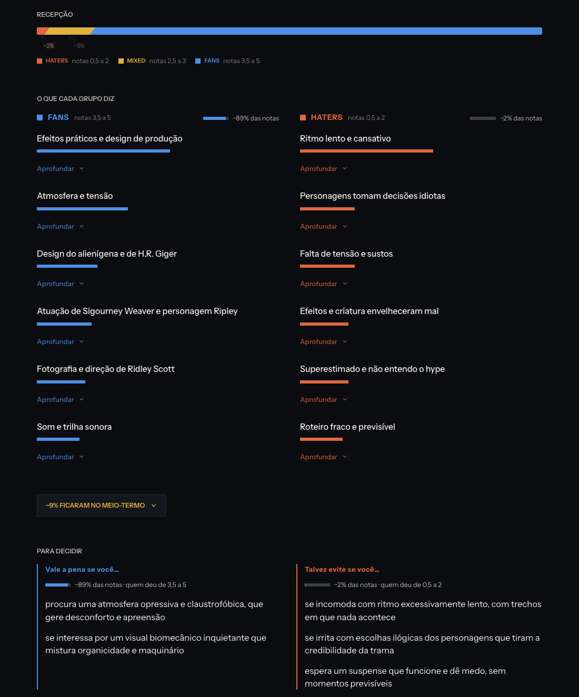

About / How it works
This page is in English for reviewers. The rest of the site is in Brazilian Portuguese.
What it is
Espectro 24 is a Portuguese-language website for people who have not seen a film yet. For each film it shows how opinions are distributed across three groups of Letterboxd ratings (0.5–2★, 2.5–3★, 3.5–5★) and what each group says.
There is no average rating, score or star anywhere on the site.
How reviews are used
- For each film we read a sample of about 120 public reviews: 40 per rating group.
- A language model groups the recurring themes in each group.
- All counts are computed in code, not by the model. The share of each group comes from the film’s public Letterboxd ratings histogram.
- The site shows short summaries in Portuguese, not the text of the reviews.
What never appears
- No Letterboxd username, or any other reviewer identity, appears on any page or in the data files the site serves.
- No review text is republished. The examples under each theme are paraphrases written by the model. We check this automatically: the longest run of consecutive words an example shares with any review in its group has a median of 2 words and a maximum of 8 (common phrases), across the roughly 1,800 examples we measured.
- No average rating, score or star.
- No plot spoilers: reviews that reveal the plot are filtered out before analysis.
Model training
The data is not used to train any model.
Attribution
The reviews come from Letterboxd’s public pages; the site is not affiliated with Letterboxd. Each film page links to that film’s reviews on Letterboxd in its footer. Film details and images come from TMDB, which does not endorse this product (credits and sources, in Portuguese).
Example: Alien (1979)

- Reception bar: the share of each rating group among all public ratings of the film (~2% low, ~9% middle, ~89% high).
- What each group says: the recurring themes of the high-rating group (left) and the low-rating group (right), each with a bar for how often the theme appears in that group’s sample. “Aprofundar” expands a short paraphrased example.
- Middle group: collapsed by default (“~9% stayed in the middle”).
- Para decidir: “worth it if you…” and “maybe avoid if you…”, one line per recurring theme.
Contact and project
A non-commercial project by a student at UFPB (Universidade Federal da Paraíba, Brazil). No ads and no user accounts.